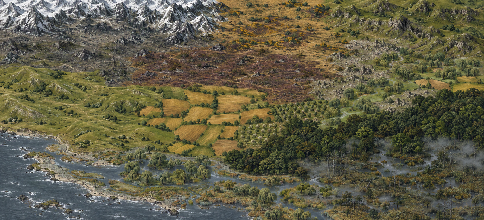

Choose your obligations.
Find work, investigate trouble and decide which promises are worth keeping. The main campaign begins when you choose to join it.

A dark high-fantasy party RPG
Lead a company through the Charterlands, where a broken crown has left soldiers, guilds and ordinary people to decide who deserves their loyalty.
Windows PC · Single-player · 0.9.1 Public Alpha
Your company. Your convictions.
Begin with the people of Bellwether. Follow the campaign, take local work or set out along roads made dangerous by war and ambition.
Find work, investigate trouble and decide which promises are worth keeping. The main campaign begins when you choose to join it.
Build a company of up to five. Companions have their own convictions, and what they witness can strengthen trust or test their loyalty.
Position your company on a hex battlefield. Balance movement, weapon attacks, spells, supplies and defense as each turn unfolds.
The Charterlands
Travel between settlements with different needs, rival factions and people who remember your actions. A welcome in one town does not guarantee a welcome in the next.
The reconstructed campaign, twenty walkable settlements and current dialogue systems form the 0.9.1 alpha. Long-session playtesting continues.
About the playtest →
One mainline. A free playtest.